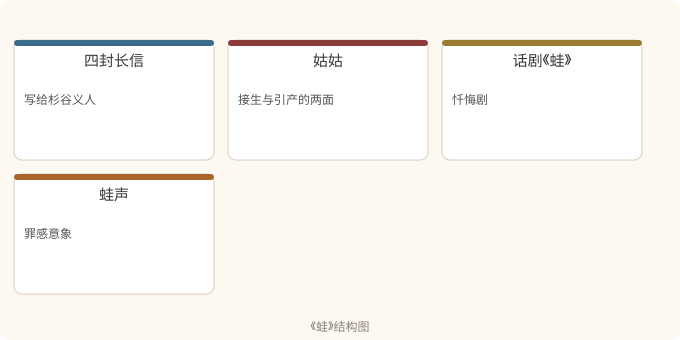

蛙
一、基本信息
| 作者 | 莫言 |
|---|---|
| 成书/出版 | 2009年出版（Britannica：Wa (2009; Frog)） Mo Yan — Encyclopaedia Britannica（百科全书） |
| 国别/地区 | 中国 |
| 时代 | 现当代 · 当代 |
| 体裁 | 长篇小说 |
| 语言 | 汉语（白话·书信+话剧） |

《蛙》结构图（主题·结构图）
二、创作背景
Britannica（Mo Yan 条）：later works included the novels Tanxiang xing (2001), Shengsi pilao (2006), and Wa (2009; Frog)——本作即其中之一。
题材：乡村妇产科医生『姑姑』60年接生史与计划生育年代（通说）。
三、内容脉络
剧作家蝌蚪（万足）写给日本作家杉谷义人的四封长信+一部话剧（通说）。
姑姑：从『送子娘娘』到计划生育执行者再到蛙声中的忏悔者（通说）。
四、主要人物表
| 人物 | 身份 | 说明 |
|---|---|---|
| 姑姑（万心） | 妇产科医生 | 全书核心——功与罪的载体（通说） |
| 蝌蚪（万足） | 剧作家 | 叙述者 |
| 王仁美 | 蝌妻 | 引产事故身亡（通说待核） |
五、主题与艺术特点
- 生命伦理：生育控制年代的个体命运（通说）。
- 忏悔与自我开脱：叙述者的道德困境（通说）。
- 蛙的意象：多子/蛙神/罪感的变形（通说待核）。
六、影响与评论
- Britannica：列为莫言后期代表作之一（Wa (2009; Frog)）。
Mo Yan — Encyclopaedia Britannica（百科全书） - Britannica：2012年诺贝尔文学奖；其小说 always marked by an impassioned humanism（始终带着炽热的人道主义）。
Mo Yan — Encyclopaedia Britannica（百科全书）
七、阅读建议
难点
- 书信体+话剧的混合结构。
- 计划生育史实的政策语境。
- 《蛙》（上海文艺出版社，通说待核）。
先《生死疲劳》或《红高粱家族》→ 本作。
八、待核实
- 第八届茅盾文学奖（2011年）待核。
- 姑姑原型（莫言姑父之妻说——作者自述）待核。
- 话剧部分章法待核。
本页主要来源
莫言的其他收录作品：红高粱家族